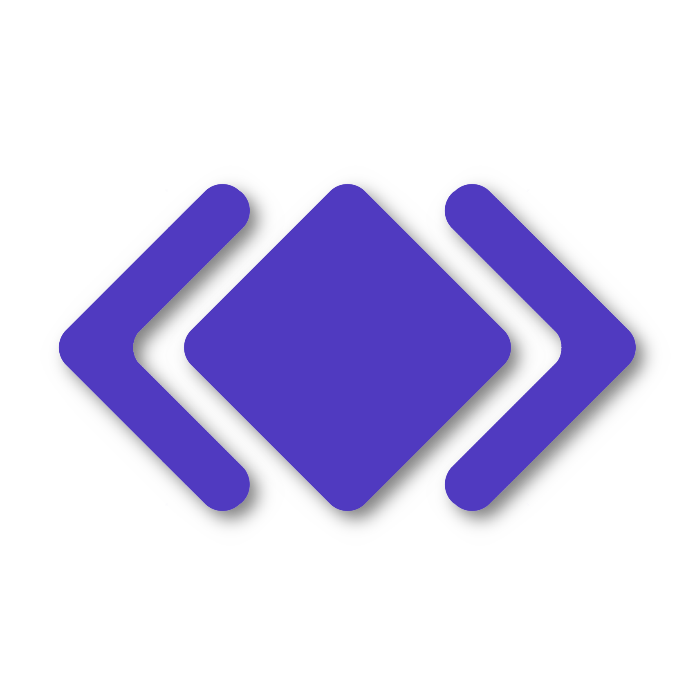

Loric Informatique
C'est simple comme echo Hello World!
Bienvenue sur le site Loric Informatique. Ici, vous trouverez tous ce qu'il vous faut pour travailler en informatique.
Ici, vous trouverez des astuces à appliquer sur votre appareil et de l'aide pour résoudre des problèmes sur votre appareil.
Nous vous apportons également l'essentiel pour pouvoir apprendre à coder facilement grâce à des meilleurs outils de codage et des mémentos super bien expliqués.

L'essentiel des astuces et des aides sur les erreurs
Loric Informatique est là pour vous donner des astuces à appliquer sur votre appareil et de l'aide pour résoudre des problèmes sur votre appareil.
Tout ce qu'il vous faut pour coder
Loric Informatique vous apporte l'essentiel pour pouvoir apprendre à coder facilement grâce à des meilleurs outils de codage et des mémentos super bien expliqués.